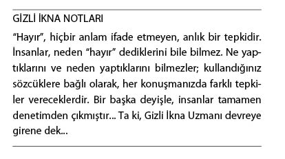
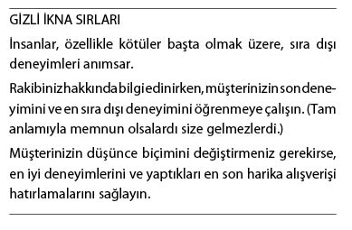
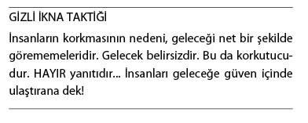
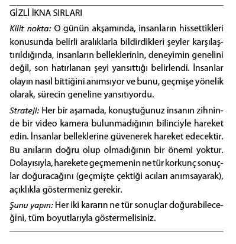
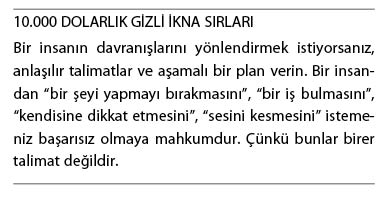
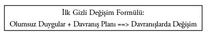
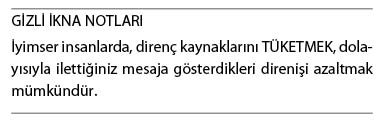

“Hayır”dan “Evet”e
Hedeflerinizin “Hayır” Demesinin En Yaygın Nedenleri ve Bunu Aşmanın Yolları
İnsanların “Hayır” sözünü dile getirmelerinin nedeni, genellikle anlık bir tepkidir. Bunu ya da benzeri bir şeyi daha önce de yapmışlardır ve kötü bir karar olduğuna kanaat getirmişlerdir. “Hayır” yanıtlarının yüzde 90’ının kökeninde bu vardır. Şimdi, tüm dikkatinizi bize verin.

Duş aldığınızı farz edin. Su, bir anda buz gibi soğuyor. Hemen dönüp suyun sıcaklığını artırıyorsunuz. Ancak, bir türlü ısınmıyor. Evdeki birileri sıcak suyu kullanıyor olmalı! Hemen suyu kapatıp çıkıyorsunuz. O ana kadarki 20 dakikalık harika duş keyfiniz de mahvoldu. Birilerinin inanılmaz bir düşüncesizlik yaptığını ve çok kötü bir duş almak zorunda kaldığınızı, altı ay sonra bile anımsarsınız. O ana dek, 20 dakika boyunca rahatladığınızı ise, kesinlikle unutursunuz.
Ertesi gün beş dakikalık bir duş alırsınız. Kendinizi iyi hissedersiniz. Sıcak ve rahatlatıcı... Ancak, birilerinin her an sıcak suyu kullanmaya başlayabileceğini anımsayarak bir an önce duştan çıkarsınız. İyi bir duş olmuştur. Kısa; ama, rahatlatıcı. Haftanın ilerleyen günlerinde de bunu iyi bir duş olarak anımsarsınız.
Tüm ilişkilerin güzel ve kötü zamanları vardır. Geneldeyse ortadadır. Zamanınızın çoğunu çalışarak, evi temizleyerek geçirirsiniz. Eşinizle olan ilişkinize odaklanmazsınız. Ardından tartışmalar, kavgalar başlar. Offf! Korkunçtur! Yeni bir ilişkiye başlama zamanı gelmiştir. Haber duyulur. Tartışmalar şiddetlenir. Zaten tahmin ediyordunuz! Yaşamınızın geri kalan kısmını, bu ilişkiyi 25 yıldır sürdürdüğünüze inanamadığınızı anlatarak geçirirsiniz.
Başkalarını nasıl etkileyebileceğinizi anlayabilmek için, insanların nasıl karar verdiğini, geçmişi nasıl andıklarını, geleceği nasıl gördüklerini anlamanız gerekir. Birçoklarının farkında olmadığı ve ikna işini bir “sayı oyunu”na dönüştüren şey de budur.
Yukarıdaki örnekte de görmüş olduğunuz gibi;
1. İnsanlar, özellikle kötüler olmak üzere, sıra dışı deneyimleri anımsar.
2. Olayın nasıl bittiği, kesinlikle anımsanır.

3. İnsanlar geleceği net bir şekilde göremez, neler hissedeceklerini bilemezler. Birtakım olaylar gelip geçtiği halde, hâlâ beklemeyi sürdürürler.
Bütün bunların, iletişim ve ikna beceriniz ile -elbette ki- işiniz ve ilişkileriniz açısından yaşamsal bir önemi olduğunu göreceksiniz.

İşin aslı, bu, öğrendiğiniz en önemli bilgi olabilir.
Herhangi bir sohbet sırasında, karşınızdaki kişinin “Bunu neden söyledin?” dediği oldu mu?
“Söylemedim!”
“Söyledin. Kulaklarımla duydum!”
“Söylemedim!”
O gece başkalarıyla yaptığınız sohbetler sırasında (ya da günlüğünüzü yazarken), her ikiniz de karşı tarafın aptal, düşüncesiz ya da olumlu anlamlara gelmediği kesin olan bir şeyler olduğunu düşünürsünüz.
İkinizden birinin yanıldığı ortada olsa bile, her ikiniz de kendi belleğinize eşit derecede güvenirsiniz. Böyle bir sorunu çözmenin olanağı yoktur. Sorun, bellektedir. Beyin eksik parçaları kafasına göre tamamlamaktadır. Aslında söylenmeyen şeylerin söylendiğinin, duyulmayan şeylerin duyulduğunun iddia edildiği bu anlar, herkesin başına gelmiştir. Beyninizi, aksine ikna edemezsiniz. Sonuçta o da o sırada oradaydı!
O halde, 30 saniye önce olan bir şey konusunda bile belleğinize güvenemeyeceğinize göre, belleğinizin geçmişte yaşananları doğru aktardığına nasıl inanabilirsiniz? Yanıt: İnanamazsınız; ancak, bunu bilebilirsiniz. Bunu bilmenizin yolu, her hafta elektronik postanıza gelen, mutlaka okunması gereken internet dergisi Kevin Hogan ile Kahve Sohbetleri’ni okumanızdır (www.kevinhogan.com adresinden kaydınızı yaptırabilirsiniz.) Karşınızdaki insan, Kahve’yi okumamıştır. Dolayısıyla ya bu konuyu geçmeniz ya da nöroloji hakkında kısa bir konferans vermeniz gerekir. İşe şöyle başlayabilirsiniz:
Kısa süre önce yayınlanan bir araştırmada kolonoskopi yaptırması gereken insanlardan, bu işlem sırasında, düzenli olarak duydukları rahatsızlıkları bildirmeleri isteniyordu. İşlemin sonunda, gruplardan birinin, kamera çıkarılmadan önce bir dakika dinlenmesine izin verildi. Diğer gruptaki kameralar ise bir dakika erken çıkarıldı (işlem o sırada bitmişti) ve dinlenmelerine izin verilmedi.
Sonuç: Kamera bedenlerinde daha uzun süre kalan; ancak, işlemi çok daha kolay atlatan gruptakiler, kolonoskopiyi, işlemleri daha kısa sürede biten gruptakilerden farklı anımsıyordu. Kamerası hareketsiz halde bir dakika fazladan bekletilen gruptakiler kolonoskopinin “o kadar da kötü olmadığını” söylüyordu. Dinlenmelerine izin verilmeyen gruptakiler ise bu deneyimi çok daha kötü hatırlıyordu.

Borsada para kaybeden insanların para piyasalarında kalma ısrarını anlayabilirsiniz. Ancak, bu ısrarı sürdürmeleri durumunda büyük olasılıkla iflas edeceklerdir. Onlara geçmişi yok saymalarını söyleyemezsiniz. İçinde bulundukları ortamın çok farklı olmadığını, dolayısıyla bunun tekrar olabileceğini, benzer sonuçların yaşanma olasılığının yüksek olduğunu anlatmalısınız.
İkna alanındaki araştırmalar açıktır. Başarılı olabilmek için olası tüm sonuçları ortaya koymanız gerekir. Aksi halde, karşınızdaki insan, sağduyunun gerektirdiği şekilde değil; hissettiği gibi davranmaya mecbur kalacaktır. Olası sonuçları bildirmediğiniz ve değerlendirmediğiniz sürece kaybetme korkusunu aşmanız kolay olmayacaktır.
Ardından, olası geleceğin net bir tablosunu sunun. Fazla pembe bir tablo çizerseniz, her ikiniz birden kaybedersiniz. Gerçekçi bir şekilde anlatırsanız, karşınızdaki insanın buna uygun şekilde davranma olasılığı artacaktır.
Nihayetinde borsa çökmüş, Titanic batmış, İkiz Kuleler yıkılmıştır; ancak, bunlar borsadan, gemilerden, gökdelenlerden uzak durmak için bir neden değildir. Hatta oyunun ilk yarısında başarısız olmanız, ikinci yarıda daha fazla çaba harcamanızı sağlar.
Müşterinize bunu anlatmalısınız. Bu benzetmeyi kullanırsanız, anlayacaklardır. Geçmişteki kötü deneyimlerin müşterinizin kaçmasına yol açmasına izin vermeyin.
Omega Stratejilerine Giriş
Knowles, Crawford ve Linn, kulağa bir avukatlık firması gibi gelse de aslında, Arkansas Üniversitesi’nde görev yapan, son birkaç yıl boyunca, insanların direncini kırma konusunda tanıdığım herkesten daha fazla çalışmalar yürüten üç bilim insanıdır. Bu insanların çalışmaları, benim eserlerimi derinden etkilemiştir. Direnci azaltmanın yolu, başarılı doktorların “Omega Stratejileri” adını verdiği şeyi uygulamaktan geçer. Omega Stratejisi, ürünün değerini artırmaya değil; ikna sürecinde yaşanan direnç ve tepkileri azaltmaya yönelik bir ikna stratejisidir. Karşılıklı çıkar ilkesinin etkili olduğunu bilmek ayrı bir şeydir, karşılıklı çıkar ilkesini ne zaman ve ne şekilde uygulamaya sokacağını bilmek apayrı... İnsanlardan karşılıklı bir iyilik istemenin, güçlü bir etkileme tekniği olduğunu bilmeniz, bu iyiliği ne zaman, nasıl istemeniz gerektiğini bildiğiniz anlamına gelmez. Size, bir dizi etkileme tekniğini kullanarak ikna edici bir şekilde iletişim kurmanın yollarını ve neler yapmamanız gerektiğini göstermek istiyorum.
Annesinin, “Evlat, bunu yaparsan kendini öldürürsün” dediği çocuk aynı şeyleri yapmayı sürdürür.
Bu anne, hemen herkes gibi, temel bir etkileme unsurunu unutmuştur. Şunu aklınıza yazın.

Onlarca yıldır yürütülen araştırmalar, insanları etkilemek ve size uymalarını sağlamak için anlaşılır talimatlar vermenin gerekliliğini ortaya koymuştur. Bu söz, size ne ifade ediyor? Bunun anlamı, insanların, açmalarını istediğiniz kapıya doğru adım adım ilerlemesini sağlamanız gerektiğidir. Bunun dışındaki hiçbir şeyin kısa vadede de, uzun vadede de başarılı olması pek olası değildir.
Gerçekleştirilen tüm araştırmaların ayrıntılarını anlatarak, konuyu derinlemesine ele alabilirdim; ancak, bu işi www.kevinhogan.com adresinden bulabileceğiniz Etkileme Bilimi CD programına bırakacağım. Bunun yerine, dikkatinizi (fark ettiniz mi?) inanılmaz derecede etkili olabilecek ya da elinizde patlayabilecek bir başka tekniğe çekmek istiyorum; korkuya.
Korku, hepimizin ya kaçmak ya da mücadele etmek zorunda kaldığı bir etkendir. Mantıksız korkularımızı yenmek ve aşmak isteriz. Kimse korku duymak istemez. Oysa, korku insanları başka hiçbir şeyin beceremeyeceği kadar etkili bir şekilde motive edebilir.
“Prezervatif kullanmadan seks yaparsanız AIDS’e yakalanabilirsiniz!” Bu ifade korkuya yol açabilir de, açmayabilir de. Davranışlarınızda bir değişime neden olabilir; ancak, bu pek yüksek bir olasılık değildir. “AIDS” sözü “kaza” sözü kadar etkili değildir. Kamuoyu, gereğinden fazla kullanılan bu söze karşı bağışıklık kazanmış durumdadır.
“Sigara içmeyi sürdürürsen göreceğin şey, sana bakmak için tabutunun başına toplanan çocukların ve torunların olacaktır. Seninle konuşamadıkları için ağlayacaklardır. Seninle konuşamayacaklardır; çünkü, sen tütün aracılığıyla ağır ağır intihar etmeyi seçmişsindir. Yüzün buruş buruş olmuştur. Artık, seni hep bu şekilde hatırlayacaklardır.”
Bu, çocuklu insanların büyük bölümünü korkutan bir senaryodur. (Çünkü, korkuyu güçlü bir şekilde kullanmış oldunuz.) Şöyle devam edelim: “Sigarayı önümüzdeki bir ay boyunca günde yarım pakete, gelecek aydan itibaren günde bir taneye indirir, sonunda da tamamen bırakırsan, sağlıklı ve mutlu bir şekilde torunlarınla oynayabilirsin.”
Burada yaptığımız şey nedir? Arkadaşımızı, ölümle korkutarak, uyabileceği somut talimatlar verdik. Bu, ikna edicidir. Ancak, bugüne dek benzer şeyleri 50 bin sefer duyan bir tiryaki, bu sözlere karşı bağışıklık kazanacak ve çağrınıza kulak asmayacaktır. İnsanların aynı sözleri ve kavramları defalarca duyması durumunda, sözler etkisini ve gücünü yitirecektir. Peki, böyle bir durumda ne yapmamız gerekir?
Ve de bu, etik midir? Bu, hakkında birçok kitap yazılan, oldukça ilginç bir sorudur. Bu sorunun yanıtını bilmiyorum; ancak, bu konunun gündeme getirilmesinden memnunum. Temel kurallardan biri, iletişim kurduğunuz herkesin çıkarına uygun şekilde davranmaktır.
Buradan alınacak ders basittir. Kurduğunuz iletişim sırasında korkuyu; değişimi hızlandırmak, karşınızdakinin davranışlarını değiştirmek ya da birilerini bir ürünü, fikri, hizmeti, satın almaya ikna etmek amacıyla kullanmanız durumunda, başarılı olabilmek için, mesajınızı adım adım talimatlar şeklinde iletmeniz gerekir.

Bir insanın davranışlarını farklı yönlerde değiştirmek amacıyla, birbirinden farklı iki korkutucu, gerginlik yaratıcı deneyimin kullanılması durumunda neler olabilir? Pişmanlık beklentisi, akademisyenlerin, son birkaç yıldır araştırdıkları konulardan biridir. Los Angeles’taki California Üniversitesi’nden 164 öğrenciye şöyle bir senaryodan söz edilmişti:
Arabanızı otoparka park ederek, geç kalmak istemediğiniz bir sınava yetişmek üzere koşturmaya başladınız. Yarı yolda arabanızı kilitlemediğinizi düşünmeye başladınız.
Öğrencilerin yarısına, arabanın yanına döndüklerinde, arabanın kilitli olduğunu fark etmeleri, bu arada da sınavı kaçırmaları durumunda neler hissedecekleri soruldu. Diğer gruba ise arabanın yanına dönmeyerek sınava girmeleri, sınav sonrası arabanın parçalandığını görmeleri durumunda neler hissedecekleri soruldu. Sizce neler hissederlerdi?
Öğrencilerin tamamına, sınava mı girecekleri, yoksa arabanın yanına mı gidecekleri soruldu. Arabalarının parçalandığı söylenen öğrencilerin yüzde 69’u, arabanın yanına giderek kapıların kilitli olup olmadığını kontrol edeceğini söyledi. Sınavı kaçıracağı söylenenlerin de yüzde 34.5’i, dönüp arabaya bakacaklarını söyledi. Kontrol grubu, öğrencilerin yüzde 46’sının dönüp arabayı kontrol edeceğini ortaya çıkardı.
Çıkarılacak ders: Genel anlamda, öğrenciler, pişmanlık beklentisi durumuyla yüz yüze geldiğinde, bu pişmanlığın yaşanmasını engellemeye yönelik eylemler gerçekleştireceklerini söylediler.
Hepimiz, insanların yapacaklarını söylediği şeylerle, gerçek hayatta yaptıklarının birbirinden çok farklı olduğunu biliriz. Diğer araştırmalar da bu olguyu desteklemektedir. İnsanlar olası bir pişmanlıkla yüz yüze geldiğinde, kendilerini pişmanlıktan kurtaracak eylemler gerçekleştirme eğilimine girer. Bu, insanları etkilemeyi hedefleyen bizlerin, aklında tutması gereken önemli bir şeydir.
Gizli Güç Projesi
İnsanların ürün ya da hizmetlerinizi kullanmaması durumunda yaşayabilecekleri 10 güçlüğü yazın. Bir başka deyişle, pişmanlık beklentisi kavramını nasıl kullanabileceğinizi düşünün.
Gizli İkna Taktikleri: İnançların Değiştirilmesi
Önerdiğiniz şeyin tam tersine inanan bir insanı ikna etmeye çalıştığınızda, inançlar insan beynine tutkal gibi yapışır.
Müşterilerinizin sizi, ürününüzü ve hizmetlerinizi satın almasını istiyorsunuz. Bu kişilerin, sizin hakkınızda, ürününüz ve hizmetleriniz hakkında bir inancı vardır. Bu inancı değiştirmek ve inançlarının yanlışlığını, doğruluğu su götürmez kanıtlarınızla göstermek istiyorsunuz. Gösterdiğiniz kanıtlar ne kadar açık ve doğru olursa olsun, sizden alışveriş yapmayacaklardır. Kazanılması olanaksız olmasa bile, oldukça zorlu bir savaşla karşı karşıyasınız demektir.
Ne kadar zorlu? İnsanların siyasi partilere ve dinlere, aksini gösteren kanıtlara karşın inanmayı sürdürdüğünü bilirsiniz. (Zaten kibar konuşmalarda bu yüzden bu konulara girmemeniz beklenir.)
1996’da Bob Dole başkan adayı olduğu sırada California’daki seçim kampanyasına yardımcı olmam istenmişti. Reddetmiştim. O dönem Cumhuriyetçi Parti’dekilerin bir kısmı sigaranın kötü olmadığını savunuyordu. (Konuyu uzatmamak için ayrıntıya girmiyorum.) Daha aptalca bir şey olabilir miydi? Ancak, tütün sektörü Dole’un kampanyasına büyük maddi destekte bulunuyordu. Dolayısıyla, Cumhuriyetçiler de tütünün zararlı etkilerini görmezden geliyordu. Benim de bu tür bir şeyin parçası olmaya niyetim yoktu. (Bu arada Bob Dole’u çok severim. Ancak, bu zihnimdeki etik sınırları aşan bir şeydi.)
İnançlarım, sigaranın o kadar da öldürücü olmadığını söylemenin yanlış olduğunu düşünmeme yol açacak kadar güçlüydü. Böyle bir suçla yaşayamazdım. Bu kararı almam 10 saniye bile sürmedi.
Siyasi ve dini inançların güçlü olmasının nedeni, aksini düşünen insanlara karşı savunulması zorunluluğudur. İnançlar savunuldukça daha da derinlere işler. İnsanlar inançları konusunda duygusallaştıkça, bu inancı mantık yoluyla, hatta somut deliller öne sürerek ortadan kaldırmak güçleşir. Mantık, tek başına bir inancı ortadan kaldırmaya yetmez. Genellikle, bir inancı ortadan kaldırabilen tek şey, başka inançlardır.
Ya, o kadar savunulmayan inançlar? Ya, inanç Demokrat, Katolik, Cumhuriyetçi ya da Yahudi olmak hakkında değilse? Ya, bu inançla duygusal bir bağ kurulmamışsa? Bir ikna felsefesi hakkında tahminde bulunmadığımızı, olgusal bir anlayışla karşı karşıya bulunduğumuzu nasıl anlayabileceğiz? Böyle bir durumda önce bir inanç aşılamanız, ardından değiştirmeye çalışmanız gerekir.
İki ayrı gruba, kısa bir açıklama yapıldıktan sonra, itfaiyecileri işlerinde başarılı ya da başarısız kılan özelliklere ilişkin sorular verilmişti. (Anderson, Lepper ve Ross, 1980) Gruplardan birine başarılı itfaiyecilerin risk alan insanlar olduğu söylenmişti. Diğer gruba ise başarılı olamayan itfaiyecilerin çoğunluğunun risk alan insanlar arasından çıktığı anlatıldı.
Ardından, deneye katılanlara verilen bilgilerin yanlış olduğu söylendi. “Hepsini ben uydurdum. Bu söylediklerimi kanıtlayabilecek bir kanıt bulunmuyor.” Sizce neler oldu?
Kendilerine iyi itfaiyecilerin risk alan insanlar olduğu söylenen grup, bu inandırıldıkları şeye inanmayı sürdürdü. Kendilerine iyi itfaiyecilerin risk almadığı söylenen grup da aynı şeye inanmaya devam etti. Hiç kimsenin inancı değişmedi.
Sonradan gerçekleştirilen araştırmada, katılımcılara, inandıkları şeye neden inandıkları ve yapılan açıklamanın ardından inançlarının neden güçlendiği soruldu.
İlginç not: Katılımcılar bu inançlarının nedeninin katıldıkları deney olduğunu açıklamadı. Her iki grup da farklı nedenler ileri sürdü. Birçoğu bu bilgileri katıldıkları deneyde öğrendiğini bile hatırlamıyordu.
Şimdi, araştırmanın ortaya çıkardığı, insanların inançlarıyla ilgili korkutucu haberlere geçelim:
İnsanlar, idam cezasının cinayet suçunun engellenmesinde caydırıcı bir etken olduğuna inanan ve inanmayanlar olarak iki gruba ayrıldı. Ardından herkese, okuması amacıyla birer makale verildi. Her iki gruptaki insanların yarısına, idam cezasının uygulandığı eyaletlerde cinayet oranının düştüğünü anlatan makaleler okutuldu. Her iki gruptaki diğer insanlara ise, idam cezasının uygulandığı eyaletlerdeki cinayet oranlarında bir düşüş yaşanmadığını anlatan makaleler okutuldu.
Sonuç? Başlangıçtaki inançlar değişti; ancak, sunulan kanıtlar doğrultusunda değil, tam tersi yönde. İdam cezasının cinayet suçunu engellemediğini anlatan makaleyi okuyanların, engellediği konusundaki inancı daha da güçlendi.
Önümüzdeki birkaç bölüm boyunca farklı inançlar hakkında bilmeniz gerekenleri, bu inançların nasıl bu kadar savunulmaya başlandığını ve yanlış inançları ortadan kaldırma konusunda etkili olan ender stratejileri anlatacağım.
Birçok insan, karşılarındaki insanları ikna etmek amacıyla, benzer durumlarda kendilerinin neler yaşadığını anlatır. (“Denedim, gerçekten işe yarıyor!”) Bu stratejilerin hiçbir işe yaramadığı kanıtlanmıştır.
İşe yarayan yöntem, müşterinizin, hedeflediğiniz davranışı gerçekleştirdiğini hayal etmesini sağlamaktır.
Gizli Gücün İyimser ve Şüpheci İnsanlar Karşısında Kullanımı
Ne dersiniz? Direnç, bir depodaki su gibi, kullanıldıktan sonra tekrar doldurulan bir şey olabilir mi?
Deney
Bir araştırmada öğrenciler, doldurdukları anketlerden yola çıkılarak “iyimser” ve “şüpheci” olarak iki gruba bölündü. Daha sonra bu iki grup da dörde bölündü.
Bu gruplara, bir seçime katılan tanımadıkları yedi adayın önemli konulardaki düşüncelerini anlattıkları yedi klip gösterildi. Bir gruba sadece ilk klibe, diğer üç gruba ise sadece son klibe dikkat etmeleri söylendi. Son üç grubun ikisine, son klipten önce Fiji Adaları ile ilgili bir video gösterildi. Bu gruplardan birine Fiji ile ilgili pozitif düşünmeleri, diğerine ise Fiji’ye yapılacak bir seyahatte kötü gidebilecek şeylerin bir listesini çıkarmaları söylendi. Bunun ardından tüm deneklerden seçim adaylarının kliplerini eleştirmeleri istendi.
İyimser denekler ilk klibe başlangıçta tepki gösterdiği halde, sırasıyla izlemeye devam ettikçe daha az eleştirel bakmaya başladılar.
Son klibe gösterilen tepki ise Fiji Adaları ile ilgili görüşlere göre değişti. Eğer öğrenciler Fiji Adaları’nı eleştirmeleri istenen grupta idiyse son adayı beğendiler, Fiji Adaları ile ilgili olumlu düşünen grupta idilerse son adayı beğenmediler.
Şüpheci öğrencilerin tavrı ise daha farklıydı. Onlar en az ilk adayı eleştirdi ve adayların klipleri devam ettikçe onların da eleştirileri arttı. Fiji Adaları ile ilgili filmin onlarda herhangi bir etkisi görülmedi.

Gizli İkna Projesi
Müşterilerinizin ve iş ortaklarınızın direncini tüketerek, mesajlarınızı kabullenmeye hazır hale getirmeyi nasıl başarabilirsiniz?